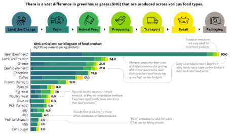

Eating the right types of meat

Why is it good for the environment?
Choosing to eat the right types of meat is a very good way to help reduce your carbon footprint. When livestock is raised for slaughtering, some animals are more eco-friendly than others. For example, cows are one of the least eco-friendly animals. According to a specialist in The Department of Animal Science, cows release 220 Lbs of methane into the atmosphere per animal, which has been a leading factor for climate change. Along with this, 30% of the earth's non-ice landmass is being used to raise livestock and 12.4 million acres of forests are cleared every year to make space for grazing. With trees being a contributing factor to reducing carbon emissions, livestock raising has a devastating impact on the environment. On top of this, cows are one of the most resource-intensive livestock to raise, with it taking twice the amount of land to raise them compared to chicken and pork. However, meat remains an important part of the human diet, and consuming meats such as seafood can be much more eco-friendly. According to a 2018 study, the amount of carbon released by seafood is 6 times less* than the carbon emissions of a cow. Choosing the right meats and lowering the demand for red meat, while a challenge, can majorly help reduce your carbon emissions and help the environment.
Why is it beneficial to the consumer?
Consuming less red meat, particularly cows, can be beneficial to your diet as well as your carbon footprint. Red meat contains a much higher amount of saturated fat than seafood such as fish meaning it can negatively impact your cholesterol. Along with this, fish contain much more omega-3 fatty acids, which lower the risk of heart disease, improve eyesight and help alleviate symptoms of anxiety and depression. While cutting red meat out of your diet wholly might not be necessary, consuming fish and seafood might help you achieve a healthier, stronger body.